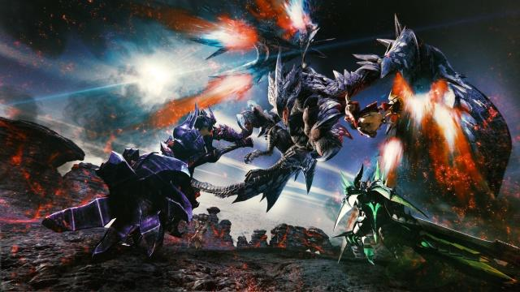
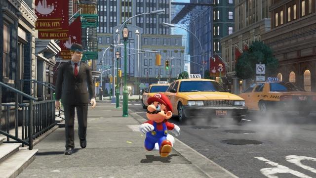
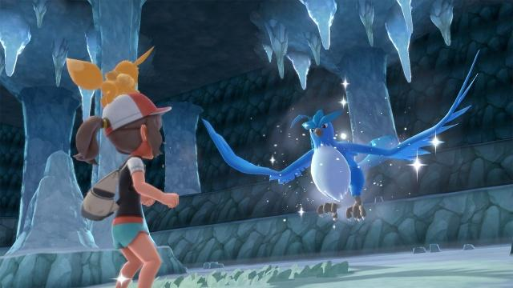

产品背景
NS，全名NINTENDO SWITCH，是任天堂游戏公司于2017年3月首发的旗舰产品，主机采用家用机掌机一体化设计。新机不锁区，支持1920*1080电视输出和1280*720掌上输出。港版NS于2017年3月3日发售，台版于12月1日发售。这是前社长岩田聪最后一部参与开发的硬件产品，该产品将成为未来任天堂娱乐事业蓝图的中心。NS首秀获得强烈反响，预告片YouTube首日播放量超一千万回，一度登顶YouTube播放榜首，风头压过美国大选。

“Switch”的英文字面解释为开关和切换，显然后者更应该是任天堂这台全新主机所想要诠释的定义。其最大的特征就是同时具备携带和家用两种特性，同时又针对手柄控制器进行模块化设计的全新形态游戏主机。家用机和携带掌机一直是支撑任天堂经营业绩的两大支柱，NS等同于将该社过去的两条产品线合而为一。 对任天堂来说，以后不再有主机和掌机两条产品线，对于开发者来说可以摆脱双线奋战的困扰，更加专注的开发游戏。主机和掌机的身份可以随时无缝切换（Switch），这正是任天堂为NS所下的定义。
配置规格
Nintendo Switch采用了家用机掌机一体化设计，其机身是一个类似Wii U的GamePad设计，但与此前不同的是，Switch可以拆卸下两边的手柄，玩法更加多样。机身方面，Switch配备了一块6.2英寸分辨率为1280×720的触摸屏，相比手机行业的超高屏占比和超清屏幕，Switch这块屏幕看上去似乎既不精致又不惊艳。
不过在实际体验中，用户的注意力大多数都被游戏所本身吸引，黑边也并没有那么明显，而720P的分辨率在掌机界已经算是顶尖了，既平衡了性能也保证了续航，实际观感也较为不错。值得一提的是，Switch的前面板为塑料材质，不太耐刮却十分坚固，就算不经意间掉在地上也并不会发生屏幕破碎的情况。
硬件方面，Switch搭载了基于20nm工艺的定制版NVIDIA Tegra X1芯片，仅保留Tegra X1中的4颗Cortex- A57核心，其主频最高为2GHz。GPU方面，Switch拥有共计256个流处理器（CUDA），浮点性能为1TeraFlops。此外，Switch内置32GB闪存作为存储介质，没有内置硬盘也暂不支持外接硬盘，但可以通过Micro SD卡来扩展存储空间，最大可支持2TB拓展。从配置上看，Switch的硬件性能一般，相比PS4和XBox One来说却落后不少，但考虑到任天堂向来不以性能著称，这样的硬件配置其实也完全可以接受。
总的来说，Switch主体的造型更符合普通玩家的审美，相比起3DS或者Wii U上的奇特造型，Switch看起来更像是一台正常的游戏机，一直不走寻常路的任天堂，终于在主机造型上“规矩”了一回。
硬件性能
Nintendo Switch采用的定制Tegra 芯片组，性能架构基于全球最顶级的GeForce芯片技术。 NVIDIA 和任天堂联合开发了全新游戏 API 给 Nintendo Switch，API 名称为 NVN，其目的在于以更低的负载，带来高效的游戏体验。 NVIDIA 为其提供了先进的核心开发技术，从新的物理引擎，新的函式库、再到先进的游戏工具和函式库。 NX主机将支持虚幻4和Unity引擎。 可以使用Vulkan、OpenGL 4.5以及OpenGL ES三种高效API开发游戏，OpenGL后续产品的Vulkan，能提供高性能和低CPU负担，还能够使用以往OpenGL无法访问的GPU硬件功能。
游戏阵容
以前玩TVGAME总觉得圈子很小，每次新买游戏机的总是那几个小伙伴，PSP时代还算是辉煌的，毕竟许多不玩游戏的人都买了看电影看小说。现在生活水平在提高，信息时代也越来越发到，任天堂游戏主机Switch一经发售，独特的掌机主机二合一的创意和玩法立刻引爆玩家的话题圈，身边越来越多的朋友都购入了这款主机。现在大家的正版意识也越来越强，不过游戏卡带也不便宜，接下来通过不同的游戏风格来推荐游戏，希望能帮到大家，现在switch上的中文游戏越来越多了，所以就不特意说明了，不支持中文的会标注一下。
-Dragon Quest: Heroes 2 勇者斗恶龙：英雄2-
无论作为DQ还是无双，DQH2都是值得肯定的一部作品，成功挽救了前作的颓势，在《勇者斗恶龙》系列诞生30周年之际，给玩家们献上了“近乎完美”的作品。
美中不足的是，本作的RPG体验会因为各类刷刷刷的重复内容而显得有些生涩，同时整个地图探索以及任务系统也尚显空洞。
-Disgaea: Hour of Darkness 5 魔界战记5-
即使和系列作品没有太大差异，系列史上前所未见的“最大分量”剧情、进化了的“无穷尽”培育系统、众多新元素的加入，使游戏体验依旧出色。
-The Legend of Zelda: Breath of the wild 塞尔达传说：荒野之息-
多少人是因为这款游戏才下定决心买NS（NINTENDO SWITCH）的？就好比索尼PS（PlayStation）平台的《荒野大镖客2》、《血源诅咒》等作品一样，不玩这款游戏，主机/掌机等于白买。
游民星空、IGN、A9VG、Polygon、VGtime、网易爱玩都给了本作满分，可想而知本作质量。
系列传统与现代流行的游戏元素融合得是如此完美，在开放世界设计上展现出了大师级的制作水准，让玩家沉浸在这个“百年之后”的海拉尔王国。
当之无愧的杰作，无论对于这个游戏、这个游戏类型、这个行业以及任天堂来说，都是一种史无前例的突破。或许能像它的前辈《时之笛》一样，成为电子游戏发展史的一个里程碑。
-Splatoon 2 喷射战士2-
设计理念别具一格的第三人称射击游戏：用水枪和颜料代替真枪实弹，在一定程度上颠覆了传统射击游戏的习惯和规则；获胜的手段也不再是简单的人头数，而和结束时双方所涂抹的地图面积。
爽快的战斗、流畅的动作、有趣的设定，对动作射击苦手来说也很容易上手，并且分分钟让人上瘾，在三分钟一局的快速匹配里，总是让人想着再打一局，直至深夜。
但《喷射战士2》更多的是在对初代进行了一些内容上的补充，算是稳中求变的续作，玩过前作的老玩家可能很难从中发掘出太多新的乐趣。
-Monster Hunter XX 怪物猎人XX-
《怪物猎人》的名头实在太大，就不浪费笔墨介绍了。如果是没接触过的人，但对最近发售的《噬神者3》感兴趣，那一定要尝试下“怪物虐人”！

-Super Mario Odyssey 超级马里奥：奥德赛-
此奥德赛非育碧的那个斯巴达刺客，而是大家都熟悉的水管工。作为任天堂的金字招牌，还有《马里奥赛车8》、《马里奥疯狂兔子：王国之战》、《马里奥网球Aces》等作品在NS平台发售，但无疑这个NGC《阳光马里奥》的续作才是最好的那个！
和塞尔达一样，游民星空、IGN、A9VG、VGtime、网易爱玩、GameSpot、Gamersradar都给了满分评价。

沿用了箱庭探索机制，加之许多现实世界中的场景，其丰富有趣的游戏关卡和充满惊喜的探索内容获得了玩家和媒体的一致好评。
画面看着不高科技，但给人很高级、很舒服的感觉。海量BGM中还有许多曲子分为普通和8Bit两版，根据游戏情况适时响起，很好的烘托了游戏气氛。
众所周知，任天堂追求的一直都是游戏性，本作会让不少人重温小时候端在电视机前、和水管工一起拯救公主的感觉，然后感叹“游戏的快乐，其实一直如此简单。”
-Xenoblade Chronicles 2 异度之刃2-
不少游戏迷肯定知道《Fami通》，这次给了本作35分、进入白金殿堂：“世界设定非常的扎实充分，角色很有魅力，故事引人入胜。游戏能让玩家热情高涨，非常棒。音乐超赞。阶段性的开放战斗元素这点很好。但是战斗太繁琐，需要记住的东西太多了。要看的故事剧情太多了。探索的时候会遇见很强的敌人，被追着跑来跑去很烦。例如赚钱等作业玩法会使得游戏节奏被打乱。地图有点难懂有些困扰。”
-Octopath Traveler 八方旅人-
它是一个将经典和全新诱人创意结合到一起的现象级JRPG，虽然战斗系统和艺术风格都是在向超级NES年代致敬，但在复古形式的限制之下把内容玩出了新时代的感觉，做到了开宗立派的革新。
-Pokemon Let's Go! Pikach / Eeve 精灵宝可梦Let's Go!皮卡丘/伊布-
口袋妖怪在当年救活了任天堂，现在更是世界级的吸金利器。小时候玩掌机、烧录卡的我们，哪个没接触过这个系列？这就是传奇！
NS平台还有《口袋铁拳锦标赛DX》、《宝可梦探险寻宝》在售，有兴趣的可以去搜索一下。

-Super Smash Bros Switch 任天堂明星大乱斗特别版-
或许很多人都知道《Jump大乱斗》即将解禁发售，但可曾知道还有个《任天堂明星大乱斗》在18年末发行？
本作的每个方面都经过了仔细的设计和调整，游戏内容的巨大变化和多样性简直令人震惊。这是最有野心且包罗万象的《任天堂明星大乱斗》作品，也是任天堂Switch平台迄今为止推出的最佳游戏之一。